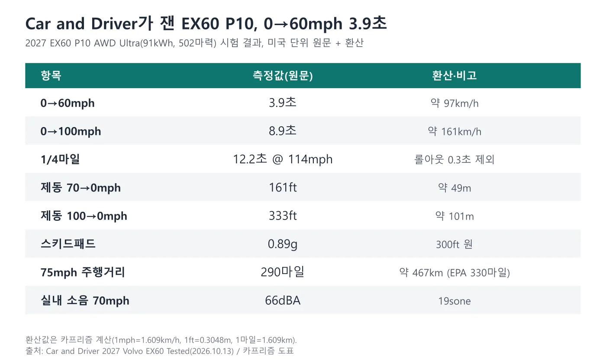
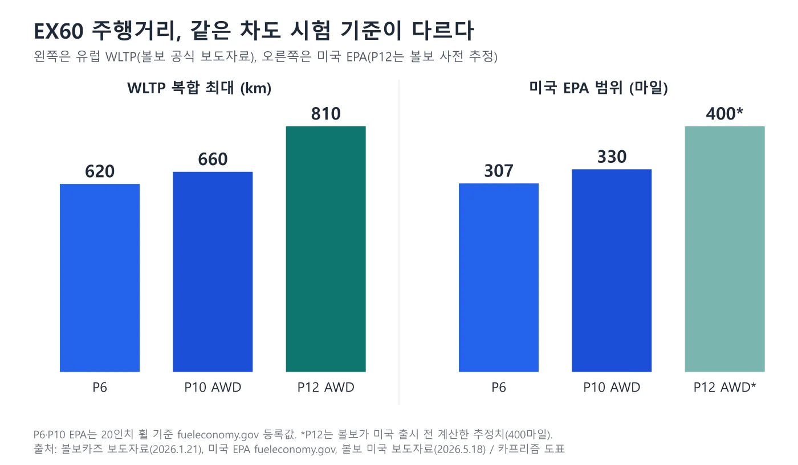
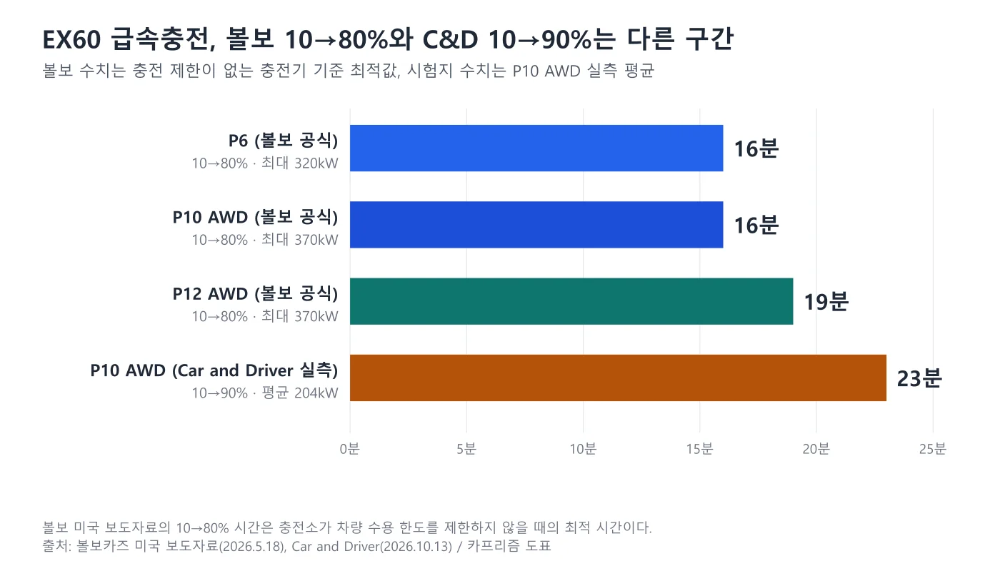
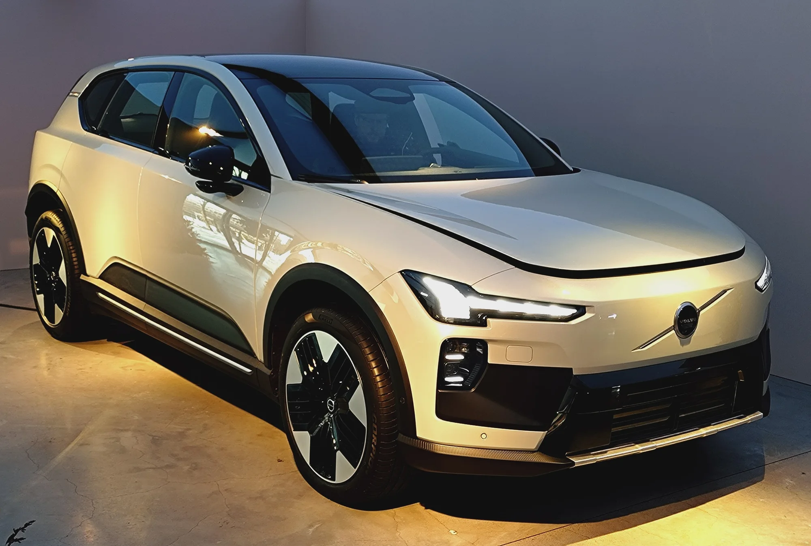
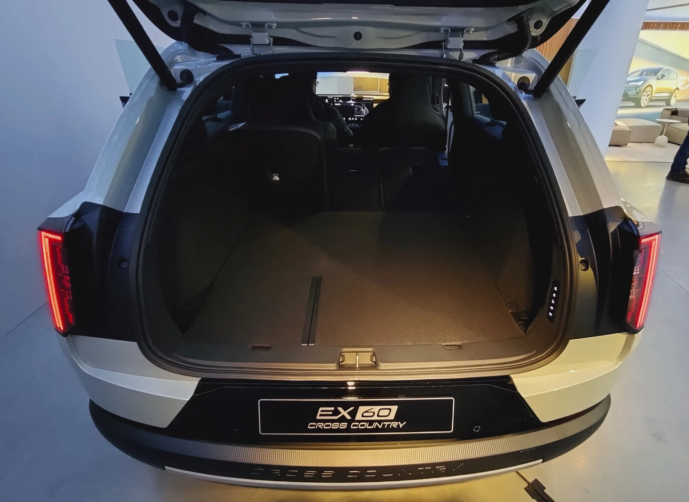
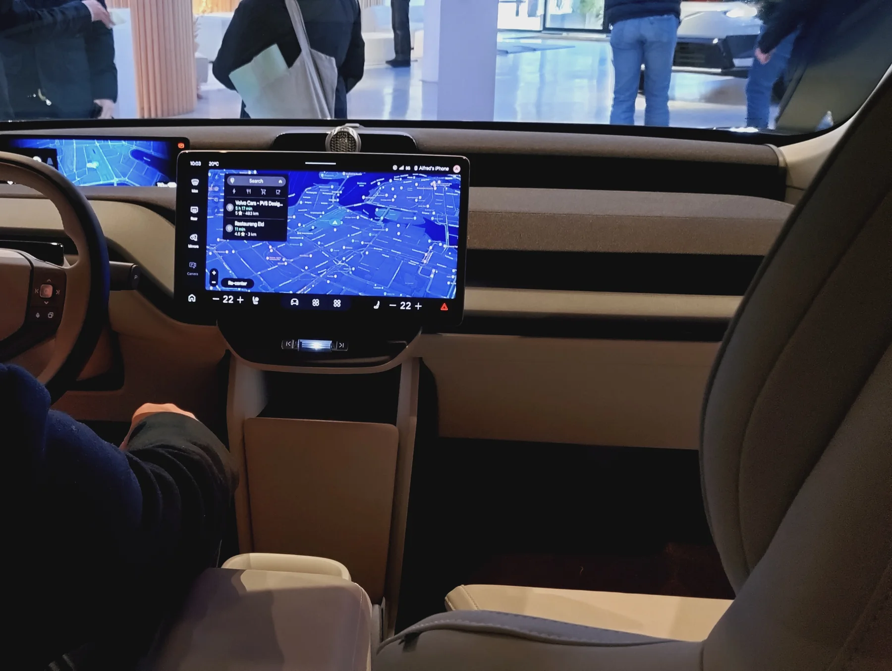
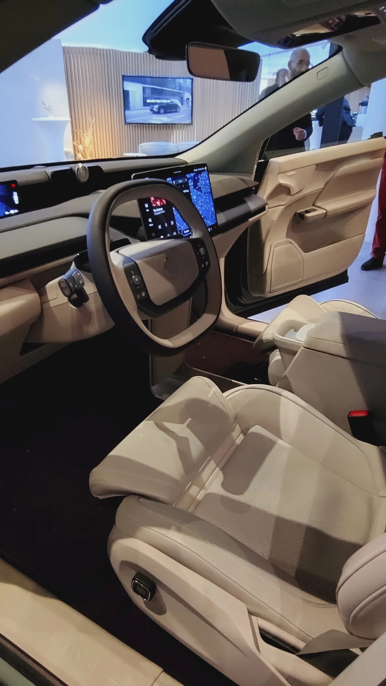
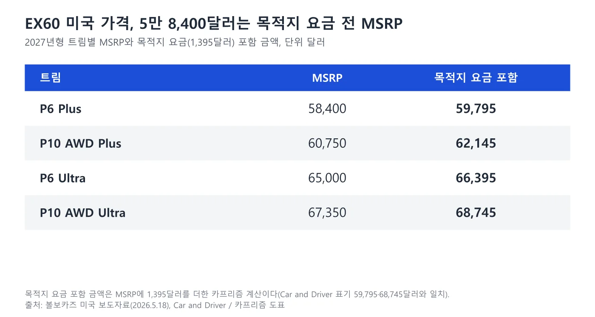
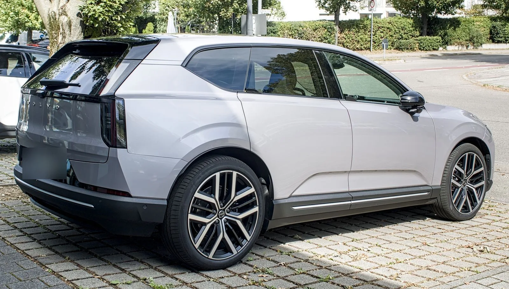

▲ 2026년 9월 6일 독일 비티히하임비싱겐의 판매점 앞에서 촬영된 은회색 볼보 EX60 전측면. 시험차(C&D P10)와 같은 개체가 아니며 트림·휠 사양은 확인하지 못했다. 번호판은 카프리즘이 흐림 처리했고, 한국 판매 사양과 같다는 근거는 없다 ⓒ Alexander Migl, Wikimedia Commons (CC BY-SA 4.0)
"0→60mph 3.9초, 그런데 75mph 주행거리는 EPA보다 40마일 짧았다." 미국 자동차 매체 Car and Driver(이하 C&D)가 2026년 10월 13일 볼보 EX60 P10 AWD의 계측 시험 결과를 공개했다(C&D 시험 기사 바로가기). 이 글은 시험 수치를 C&D의 측정값으로 출처를 밝혀 인용하고, 사양·주행거리·충전·가격은 볼보 공식 보도자료(볼보 공개 보도자료 바로가기)와 미국 EPA 등록값을 기준으로 정리했다. 기준 시점은 2026년 10월 14일이며, 미국 가격은 2027년형 MSRP다. 한국 출시 일정과 가격은 볼보자동차코리아의 공식 발표를 찾지 못했다.
볼보 전기차는 앞서 EX40 미국 단종 기사, EX50 2027년 출시 기사, 국내 판매 중인 ES90 국내 출시 기사에서 다뤘다. EX60은 이 가운데 EX40 자리를 위에서 받치는 중형 전기 SUV이고, 이 글은 EX60 자체의 시험 결과와 공식 사양, 가격에 집중한다.
▲ 2026년 9월 6일 독일 비티히하임비싱겐의 판매점 앞에서 촬영된 은회색 볼보 EX60 전측면. 시험차(C&D P10)와 같은 개체가 아니며 트림·휠 사양은 확인하지 못했다. 번호판은 카프리즘이 흐림 처리했고, 한국 판매 사양과 같다는 근거는 없다 ⓒ Alexander Migl, Wikimedia Commons (CC BY-SA 4.0)
1. C&D가 잰 EX60 P10 — 0→60mph 3.9초, 제동 161ft
C&D 시험차는 앞뒤 모터를 합쳐 502마력(기사 본문은 503마력, 제원표는 502마력으로 적혀 있다), 524lb-ft를 내는 P10 AWD Ultra다. C&D가 91kWh로 표기한 배터리(볼보 공식 사양 페이지의 명목 용량은 95.0kWh, 4장 참고), 21인치 미쉐린 e프라이머시 올시즌 타이어, 공차중량 5,098lb(약 2,312kg)로 시험했다. 아래 수치는 모두 C&D의 측정값이며 볼보 공식 수치가 아니다. 실제로 볼보 미국 사양 페이지는 P10 AWD의 0→60mph를 4.4초로 안내하고 있어, C&D 실측 3.9초와 0.5초 차이가 난다. C&D는 1ft 롤아웃(0.3초)을 뺀 값을 적는 방식이지만 볼보 수치의 산정 기준은 확인하지 못했다.
| 항목 | 측정값 | 환산(카프리즘 계산) |
|---|---|---|
| 0→60mph | 3.9초 | 0→약 97km/h |
| 0→100mph | 8.9초 | 0→약 161km/h |
| 1/4마일 | 12.2초 @ 114mph | 롤아웃 0.3초 제외 |
| 중간 가속 30→50mph / 50→70mph | 1.7초 / 2.1초 | - |
| 제동 70→0mph | 161ft | 약 49m |
| 제동 100→0mph | 333ft | 약 101m |
| 300ft 스키드패드 | 0.89g | - |
| 실내 소음(70mph 정속) | 66dBA(19sone) | - |

▲ C&D가 측정한 EX60 P10 AWD Ultra 시험 결과를 한국 독자용 환산값과 함께 정리한 도표. 환산은 카프리즘 계산이다 ⓒ 카프리즘 제작 도표
C&D는 이 가속을 "아우디·렉서스·메르세데스의 비교 경쟁 모델과 비슷한 수준"이라고 평가했고, 캐딜락 옵티크-V와 테슬라 모델 Y 퍼포먼스는 60mph까지 최소 0.5초 앞선다고 적었다. 같은 기사에서 볼보가 밝힌 기본형(P6)의 0→60mph는 5.7초다. 승차감은 "고급스럽게 격리된" 쪽이고, 운전 재미는 "시뮬레이터처럼 분리된 느낌"이라고 평했다. 스티어링 휠의 감각이 약하다는 지적도 있었다. 이 평가는 모두 C&D 기자 한 명의 시험 의견이다.
2. 주행거리 — WLTP 620~810km와 EPA 307~330마일은 왜 다른가
볼보는 EX60을 3가지 파워트레인(P6 후륜, P10 AWD, P12 AWD)과 7개 사양으로 판매한다고 밝혔다(볼보 1월 21일 보도자료 바로가기). 유럽 WLTP 기준 최대 주행거리는 P6 620km, P10 AWD 660km, P12 AWD 810km이며, 볼보는 이 수치가 "잠정(preliminary)"이라고 명시했다. 미국용으로는 EPA 시험 사이클을 근거로 한 볼보의 사전 추정치가 P6 307마일, P10 AWD 322마일, P12 AWD 400마일로 제시됐다. 이후 EPA가 P6·P10의 공식 등록값을 공개했다(EPA fueleconomy.gov 바로가기).
| 사양 | WLTP(볼보, 잠정) | 볼보 미국 사전 추정 | EPA 등록값(2027 EX60) |
|---|---|---|---|
| P6 | 최대 620km(385마일) | 307마일 | 307마일(20인치 휠) / 295마일(22인치) |
| P10 AWD | 최대 660km(410마일) | 322마일 | 330마일(20인치 휠) / 312마일(22인치) |
| P12 AWD | 최대 810km(503마일) | 400마일 | EPA 등록값 확인하지 못했다 |

▲ 볼보 EX60 사양별 주행거리. 유럽 WLTP와 미국 EPA는 시험 기준이 달라 숫자를 직접 비교할 수 없다. P12의 400마일은 볼보 사전 추정이다 ⓒ 카프리즘 제작 도표
P10의 EPA 등록값이 볼보가 앞서 말한 322마일보다 높은 330마일로 확정된 점이 눈에 띈다. EPA 등록 효율은 P6 118MPGe(복합), P10 AWD 110MPGe이고, 22인치 휠을 달면 각각 113MPGe와 104MPGe로 내려간다. 휠이 커지면 주행거리가 줄어든다는 점은 볼보 보도자료의 각주("타이어 종류와 크기에 따라 달라진다")와도 일치한다.
📍 C&D 75mph 고속 주행거리 290마일의 의미
C&D는 시험차 P10이 75mph 정속 주행에서 290마일을 갔다고 밝혔고, 이는 EPA 330마일보다 40마일(약 12%) 짧은 값이다. C&D는 이를 "경쟁 모델 가운데 무난한 수준"으로 평가했다. 고속 정속 시험은 EPA 복합 사이클보다 가혹한 조건이라 값이 낮게 나오는 경우가 많다고 알려져 있지만, 이 시험차의 시험 조건(기온 등)은 기사에 자세히 나와 있지 않다. 한국 환경부 인증 주행거리는 별도 시험이라 이 수치가 그대로 나온다고 볼 근거는 없다.
3. 급속충전 — 볼보 10→80% 16분, C&D 10→90% 23분
EX60은 800V 전기 시스템을 쓴다. 볼보 미국 보도자료(볼보 미국 보도자료 바로가기)에 따르면 최대 충전 속도는 P6 320kW, P10·P12 370kW이고, 10→80% 충전 시간은 P6·P10이 16분, P12가 19분이다. 이 시간은 충전소가 차량의 수용 한도를 제한하지 않을 때의 "최적 시간"이라고 각주에 적혀 있다. 10분 충전으로 늘어나는 주행거리는 P6 최대 155마일, P10 165마일, P12 173마일이다. 한편 볼보 글로벌 보도자료에서는 400kW 충전기로 10분에 최대 340km(P12 AWD 기준)를 달릴 수 있다고 소개했다.
| 사양 | 최대 충전 속도 | 10→80% | 10분 충전 시 늘어나는 거리 |
|---|---|---|---|
| P6 | 320kW | 16분 | 최대 155마일 |
| P10 AWD | 370kW | 16분 | 최대 165마일 |
| P12 AWD | 370kW | 19분 | 최대 173마일 |
| C&D 실측(P10 AWD) | 평균 204kW | 10→90% 23분 | - |

▲ 볼보 공식 10→80% 충전 시간과 C&D 10→90% 실측을 나란히 놓은 도표. 두 수치는 충전 구간이 달라 직접 비교할 수 없다 ⓒ 카프리즘 제작 도표
C&D는 본문에서 "10→80% 충전에 18분"이라고 적었지만, 볼보 미국 보도자료의 P10 값은 16분이다. 같은 차의 수치가 매체와 공식 자료에서 다르게 나온 것으로, 이 글에서는 충전 시간을 볼보 보도자료 값으로 쓰고 C&D의 18분은 매체 표기로만 남긴다. 북미판은 처음으로 NACS 포트를 기본 적용해 테슬라 슈퍼차저에 어댑터 없이 연결할 수 있다고 볼보는 밝혔다. 한국 시장 충전 규격은 이 자료에서 확인할 수 없다.
4. 크기·배터리·출력 — 사양표
EX60은 볼보의 새 전기차 전용 구조 SPA3 위에 만들어졌고, 배터리를 차체 구조에 통합한 셀투바디 방식과 리어 서브프레임 메가캐스팅을 처음 도입했다. 공기저항계수는 0.26이며, 배터리 보증은 10년으로 안내됐다(볼보 공식 보도자료 바로가기). 아래 사양표는 2026년 10월 14일 열어 확인한 볼보 공식 사양 페이지(볼보 글로벌 사양 페이지 바로가기 볼보 미국 사양 페이지 바로가기)를 기준으로 하고, C&D가 적은 값은 따로 열을 둬 비교했다. 공식 사양 페이지는 글로벌 쪽이 P6·P10 AWD·P12 AWD 세 가지를 싣고 있고, 미국 페이지에는 아직 P6과 P10 AWD만 올라와 있다.
| 항목 | P6 | P10 AWD | P12 AWD |
|---|---|---|---|
| 구동 | 후륜 단일 모터 | 전후륜 듀얼 모터(AWD) | 듀얼 모터(AWD) |
| 배터리 용량(볼보 공식, 명목) | 83.0kWh | 95.0kWh | 117.0kWh(글로벌 페이지) |
| 배터리 용량(C&D 표기) | 80kWh | 91kWh | 112kWh |
| 최고출력(미국 사양) | 275kW·369hp | 375kW·503hp | 미국 페이지 미게재(C&D 670hp) |
| 최고출력(글로벌 사양) | 275kW·374hp | 375kW·510hp | 500kW·680hp |
| 최대토크 | 354lb-ft(480Nm) | 524lb-ft(710Nm) | 790Nm |
| 0→60mph(볼보 미국) | 5.7초 | 4.4초(C&D 실측 3.9초) | - |
| 0→100km/h(볼보 글로벌) | 5.9초 | 4.6초 | 3.9초 |
| 10→80% 급속충전(볼보) | 16분 | 16분 | 19분 |
| WLTP 주행거리(글로벌 사양 페이지) | 최대 612km | 최대 661km | 최대 810km |
| 출시 시기(볼보) | 유럽 첫 고객 인도 2026년 7월, 미국은 P6·P10부터 주문 중이며 P12는 이후 | ||
같은 모델인데 배터리 용량이 83.0·95.0kWh와 80·91kWh로 갈리는 이유는 어디에도 설명돼 있지 않다. 볼보 공식 페이지가 "명목(nominal)" 용량이라고 적은 점으로 보아 두 수치의 산정 기준이 다른 것으로 짐작되지만, 사용 가능 용량인지는 확인하지 못했다. 출력도 미국(SAE 마력)과 유럽(미터법 마력) 표기가 달라 같은 모터가 369hp와 374hp로 나온다. 이 글은 공식 사양 페이지의 값을 우선하고, 비교가 필요한 곳에서만 C&D 표기를 병기한다. 주행거리 표에 쓴 WLTP 620·660km는 1월 보도자료의 잠정치이고, 현재 사양 페이지에는 P6 612km, P10 661km로 안내돼 있다.
| 항목 | 볼보 글로벌(mm·L) | 볼보 미국(in·ft³) | C&D 제원표(P10 AWD Ultra) |
|---|---|---|---|
| 전장 | 4,803mm | 189.1in | 189.1in |
| 전폭(사이드미러 제외) | 1,908mm | 78.5in(표기 기준 미확인) | 74.8in |
| 전고 | 1,635mm | 64.4in | 64.5in |
| 휠베이스 | 2,970mm | 116.9in | 116.9in |
| 짐 공간(2열 사용 시) | 523L(개방)·634L(최대) | 18.5ft³ | 20ft³ |
| 짐 공간(2열 접음) | 998L(개방)·1,647L(최대) | 64.3ft³ | 58ft³ |
| 프렁크 | 58L | 2.1ft³ | 3ft³ |
| 공차중량 | P6 2,113kg·P10 2,273kg·P12 2,330kg | P6 4,661lb·P10 5,016lb | 5,098lb(시험차, 약 2,312kg) |
전장·전고·휠베이스는 세 곳이 사실상 일치한다. 반면 전폭과 짐 공간은 출처마다 달라, 측정 기준(미러 포함 여부, 적재 높이, 바닥 아래 수납 포함 여부)이 다른 것으로 보이지만 어느 쪽이 어떤 기준인지는 확인하지 못했다. 한국 독자가 쓸 값은 국내 출시 때 볼보자동차코리아가 공개하는 제원을 기준으로 삼아야 한다.

▲ 볼보 EX60 크로스컨트리(전시 차량). C&D는 크로스컨트리를 P10·P12 사양으로 2028년형에 추가될 변형으로 소개했다. 이 글의 시험차와는 다른 차종이다 ⓒ Herranderssvensson, Wikimedia Commons (CC BY-SA 4.0)
C&D는 EX60이 내연기관 XC60보다 3.7in(약 94mm) 길고 휠베이스가 4.1in(약 104mm) 더 길다고 적었다. 앞좌석 레그룸은 비슷하고, 2열은 XC60이 약간 넉넉하지만 EX60은 바닥이 낮아 머리 공간이 더 크다고 평가했다. 2열을 접으면 짐 공간은 58ft³까지 늘어난다.

▲ 볼보 EX60 크로스컨트리의 열린 테일게이트(전시 차량). 일반 EX60 트렁크와 구성이 같은지는 확인하지 못했다 ⓒ Herranderssvensson, Wikimedia Commons (CC BY-SA 4.0)
5. 실내 — 15인치 OLED, 구글 제미나이, 물리 버튼은 적다
볼보는 EX60이 구글 제미나이(Gemini) AI 비서를 처음 탑재하는 볼보이며, 엔비디아·퀄컴 등과 협업한 핵심 컴퓨팅 시스템 휴긴코어(HuginCore)를 쓴다고 밝혔다. 미국 사양의 P6 Plus는 15인치 OLED 화면과 21스피커 보스 오디오를 기본으로 하고, Ultra 트림은 28스피커 바워스앤윌킨스 오디오(전 4좌석 헤드레스트 스피커 포함), 통풍 나파가죽 시트, 전동 조광 파노라마 루프, 2열 일체형 열선 부스터 시트를 추가한다. 이 구성은 미국 보도자료 기준이며, 한국 사양과 같다는 근거는 없다.

▲ 볼보 EX60 대시보드와 중앙 화면(전시 차량 촬영본을 잘라 사용). C&D는 이 화면을 15인치 OLED로 소개했다 ⓒ Herranderssvensson, Wikimedia Commons (CC BY-SA 4.0)
C&D는 새 안드로이드 기반 인포테인먼트를 "다른 최신 볼보의 불편했던 화면보다 크게 개선됐다"고 평가했지만, 공조 조작과 송풍구 방향 조절까지 화면으로만 한다는 점, 스티어링 컬럼·사이드 미러 조절도 화면과 스티어링 휠 버튼을 거친다는 점은 단점으로 꼽았다. 시험 의견이다. 볼보 아날로그 버튼 회귀 이슈는 볼보 아날로그 버튼 기사에서 따로 다뤘다.

▲ 볼보 EX60 앞좌석과 대시보드(전시 차량, 세로 사진). 작은 스티어링 휠과 가로형 화면이 보인다 ⓒ Herranderssvensson, Wikimedia Commons (CC BY-SA 4.0)
6. 미국 가격 — 5만 8,400달러는 목적지 요금 전 MSRP
볼보 미국 법인은 2026년 5월 18일 2027년형 EX60의 시작가를 5만 8,400달러(MSRP)로 발표했다. 이 금액에는 1,395달러의 목적지 요금이 빠져 있어, C&D가 적은 "기본 5만 9,795달러"는 같은 차의 목적지 요금 포함 가격이다(58,400+1,395). C&D 시험차의 판매가 6만 8,745달러도 P10 AWD Ultra의 MSRP 6만 7,350달러에 목적지 요금을 더한 값이다. 볼보는 EX60 가격이 인기 모델 XC60 플러그인 하이브리드와 같은 수준이라고도 밝혔다.
| 트림 | MSRP | 목적지 요금 포함 | 원화 환산 |
|---|---|---|---|
| P6 Plus | $58,400 | $59,795 | - |
| P10 AWD Plus | $60,750 | $62,145 | - |
| P6 Ultra | $65,000 | $66,395 | - |
| P10 AWD Ultra | $67,350 | $68,745 | - |

▲ 2027 EX60 미국 트림별 MSRP와 목적지 요금 포함 금액. 포함 금액은 카프리즘 계산이다 ⓒ 카프리즘 제작 도표
C&D는 P10이 P6보다 2,350달러만 비싸다고 지적했고(60,750-58,400=2,350달러, 일치), "그 값이면 P10으로 가는 편이 낫다"는 취지로 평했다. 원화 환산은 환율에 따라 달라지고 한국 판매가와 무관하므로 표에 넣지 않았다. 유럽 가격은 이 글에서 확인하지 못했다.
7. 한국 출시와 가격 — 확인된 것은 없다
볼보자동차코리아의 EX60 국내 출시 일정과 가격 공식 발표는 찾지 못했다. 2026년 10월 14일 볼보코리아 공식 사이트(volvocars.com/kr)를 열어 보니 EX60 차종 페이지(/kr/cars/ex60-electric/)는 열리지 않았고, 뉴스 및 스토리의 최근 게시물(ES90 출시, 판매 순위 등)에도 EX60 항목이 없었다. 오토헤럴드는 2026년 5월 20일 보도(오토헤럴드 기사 바로가기)에서 "국내 출시 일정이 아직 공개되지 않았다"고 전했고, 기자의 전망으로 국내 가격이 8,000만 원대 안팎일 수 있다고 적었고, 업계에서 이르면 올해 말 또는 내년 초 출시 가능성이 거론된다고 덧붙였다. 이는 공식 발표가 아닌 매체 추정이다. 이 글에서도 국내 가격은 단정하지 않는다.
| 비교 대상 | 카프리즘 관련 기사 |
|---|---|
| BMW iX3(C&D 꼽은 경쟁 모델) | BMW iX3 국내 출시 기사 |
| 메르세데스-벤츠 GLC 전기차(C&D 꼽은 경쟁 모델) | GLC 전기차 국내 사전계약 기사 |
| 같은 브랜드 전기 세단 ES90 | ES90 국내 출시 기사, ES90 국내 인증 기사 |
ES90 사례에서 보듯 한국 인증 주행거리는 유럽 WLTP와 크게 다르게 나올 수 있다. 두 수치의 차이는 앞서 706km라더니 520km 기사에서 다뤘다. EX60이 국내에 들어온다면 보조금 대상 여부와 인증 주행거리를 볼보자동차코리아와 한국에너지공단 자료로 따로 확인해야 한다.

▲ 같은 날 같은 장소에서 촬영된 은회색 볼보 EX60의 후측면. 세로형 테일램프와 낮게 이어지는 지붕선이 보인다. 번호판은 카프리즘이 흐림 처리했고 시험차나 한국 사양과 같다는 근거는 없다 ⓒ Alexander Migl, Wikimedia Commons (CC BY-SA 4.0)
✅ 이 글에서 확인하지 못한 것
· 한국 출시 일정, 국내 판매가, 국내 인증 주행거리·보조금
· 배터리 명목 용량(83.0·95.0kWh)과 C&D 표기(80·91kWh)의 기준 차이, 미국·유럽 전폭·짐 공간 수치의 산정 기준
· 볼보코리아 공식 사이트의 EX60 차종 페이지·가격표(2026.10.14 기준 없음)
· P12 AWD의 EPA 공식 등록값(400마일은 볼보 사전 추정)
· 유럽 판매 가격, 볼보 프레스 사진 이용 조건(미확인이라 사진은 위키미디어 CC만 사용), 사진 속 차량의 트림·한국 사양 일치 여부
· C&D 시험차의 시험 당일 조건(기온·노면)
8. 요약
C&D는 EX60 P10 AWD Ultra를 0→60mph 3.9초, 70→0mph 161ft, 75mph 정속 주행거리 290마일로 측정했다(EPA 330마일보다 40마일 짧다). 볼보 공식 자료의 WLTP 주행거리는 P6 620km·P10 660km·P12 810km(잠정)이고, EPA 등록값은 P6 307마일·P10 330마일(20인치 휠)이다.
볼보 미국 발표 기준 10→80% 충전은 P6·P10 16분, P12 19분이며 C&D는 10→90%를 23분(평균 204kW)에 측정했다. 미국 가격은 P6 Plus 5만 8,400달러(MSRP, 목적지 요금 1,395달러 별도)부터다. 한국 출시와 가격은 공식 발표를 확인하지 못했고, 8,000만 원대 전망은 매체 추정이다.